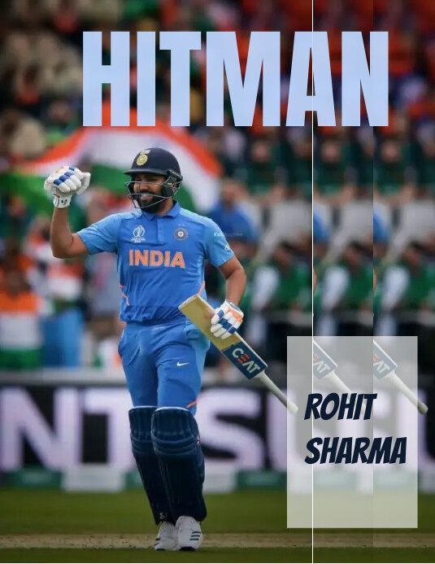

ROHIT SHARMA
Hitman of the Indian Cricket Team

Details
|
|
| Name |
Rohit gutunath sharma |
| DOB |
April 30,1987 |
| Batting style |
Right handed |
| Major teams |
India, Mumbai Indians, Deccan Charges |
| Records |
Three ODI double centuries, T20 workd cup winner |
Awards & Achievements
- ODI Double Century: Rohit is the only player to score three double centuries in One Day Internationals
(ODIs), with his highest being 264 runs against Sri Lanka in 201
- IPL Success: He has led the Mumbai Indians to multiple Indian Premier League (IPL) titles, establishing
himself as one of the most successful captains in the tournament's history.
- T20 World Cup: Rohit was part of the Indian squad that reached the semifinals of the 2014 ICC T20 World Cup,
and he played a key role in the team's performances.
- Fastest ODI Century: He holds the record for the fastest century in ODIs by an Indian, scoring 100 runs off
just 35 balls against Australia in 2013.
- ICC Awards: Rohit has been recognized multiple times at the ICC Awards, including being named the ICC ODI
Player of the Year in 2019.
- Asian Cup: He has been a key player in India's victories in the Asia Cup, contributing significantly with
his batting.
open wikipedia